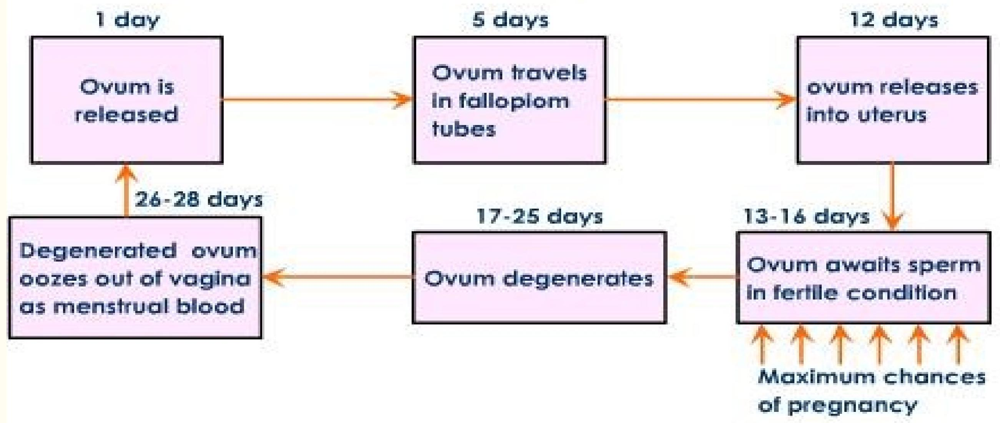

Natural Family Planning
Learning Objectives
By the end of the learning sessions, the student should be able to:
- Define natural family planning
- Review the menstrual cycle
- Explain various methods of natural family planning
Definition
NFP is a way of life by which a properly instructed couple learns to achieve or avoid pregnancy by applying appropriate sexual behavior during the fertile and infertile phases of the menstrual cycle without use of drugs, chemicals, device or surgical contraceptive.
The Menstrual Cycle
This is the consecutive cyclic occurrence of a series of physiological changes directly related to the development, regression and shedding of the endometrium under various hormonal changes.
If ovulation takes place and the egg isn't fertilized, the lining of the uterus sheds through the vagina. This is a menstrual period. The menstrual cycle consists of three phases.
1. THE MENSTRUAL PHASE
- Also referred to as menstruation/bleeding/menses or a period.
- Generally dwells for an average of 3-5days though 2-7days is also considered normal.
- The average blood loss ranges between 50-150mls.
- It should not be in clots, or capable of clotting, because of presence of plasmin enzymes from the endometrium.
- The loss consists of endometrial shed, blood from torn capillaries and the dead unfertilized ovum/oocytes.
- Physiologically, it is the last phase.
- Follicle stimulating hormone release inhibitor (FSHRI) from hypothalamus is responsible for this phase.
- It influences the anterior pituitary gland (adenohypophysis) to stop secreting Luteinizing hormone.
2. THE PROLIFERATION PHASE
- Also referred to as regenerative phase.
- This phase follows menstruation and occurs simultaneously with the follicular phase of the ovarian cycle.
- Last for about 10 days from the end of menses until ovulation occurs.
- The phase is highly influenced by oestradiol and other oestrogens.
- This hormone is secreted by the graafian follicle under the stimulation of follicle stimulating.
The specific activity of the phase is regrowth and thickening of the endometrium. Eventually, endometrium comprise of three layers namely:-
- BASAL LAYER
Lies immediately above the myometrium and it is about 1 mm thick. - FUNCTIONAL LAYER
- Contains tubular glands.
- Lies on top of the basal layer and it is approximately 2.5 mm thick.
- It is highly influenced by ovarian hormones.
- CUBOIDAL CILIATED EPITHELIUM :-
- It is the uppermost layer.
- Covers the functional layer and dips down to line the tubular glands in the previous layer.
In the ovary the dominant follicle ruptures releasing the ovum, and process is collectively referred to as OVULATION. This marks the end of the phase.
3. THE SECRETORY PHASE
- The phase dwells for 14 days (2 weeks).
- The luteinizing hormone from the anterior pituitary gland, influences the corpus luteum to secrete progesterone and oestrogen hormones.
- The functional layer, increases in thickness to about 3.5 mm .
- It becomes spongy in appearance since the glands are more tortuous.
- Blood supply is increased and nutritive secretions e.g. glycogen, are available.
CONCLUSION
- If fertilization does not occur, then the cycle restarts.
- Menstruation always occurs 14 days after ovulation.
- Prolonged or shortened cycle, results from the response of the proliferative phase.
- Pregnancy (physiological amenorrhoea) is the only factor which interrupts the cycle in a healthy woman, during the childbearing period.
- Corpus luteum becomes a white body known as corpus albican and remains in the ovary while it degenerates steadily.
Involved hormones and source
Monthly physiological changes occur in the ovaries and uterus due to hormonal regulation. These hormones are from hypothalamus, pituitary glands and ovaries.
Hypothalamus secretes:
- Gonadotrophin Release Hormone (GnRH)
- Follicle stimulating hormone release inhibitor
Pituitary secretes: FSH & LH.
Ovaries secretes: Oestrogen & progesterone.
Signs & symptoms of approaching menstruation
- Women become more irritable
- Breast tenderness
- Bloating of abdomen
- Backache and abdominal pain
- Swelling of hands and feet
- Menstruation occurs in absence of fertilization
Methods of Natural FP OR Fertility Awareness Methods(FAM)
- Symptoms based methods
- Calendar based methods
- Others - LAM, withdrawal method
1. Symptom based methods
Two Day Method (TDM)
It is a simple symptom-based method by which women check for the presence or absence of cervical secretions as the sign of fertility. If cervical secretions are seen, then the woman is in her fertile phase and should abstain from unprotected sex.
TDM is 96% effective when used correctly and 86% effective with typical use. When doing TDM counseling, women are not taught to distinguish normal cervical secretions from abnormal secretions on purpose. However users of this method are advised to consult a health professional in case they notice secretions for more than 14 days.
Billings Ovulation Method (BOM)
In this method, the days of infertility, possible fertility, and maximum fertility of the menstrual cycle are defined by observation of changes in the cervical mucus. The client should be taught to apply the method rules appropriately.
To use this method correctly the woman should:
- Avoid sex on days of monthly bleeding
- Avoid sex as soon as she notices any secretions
- Recognize evidence of ovulation (Peak day), when the mucus is very clear, stretchy (spinnberkeit's sign) and slippery
- Continue to avoid sex for 3 more days after peak day
The couple can resume sex on the 4th day after.
Objectives of BOM
- Recognize that BOM can be used to achieve or avoid pregnancy
- Accept that BOM can be used even in the absence of ovulation
- Users should observe strictly and chart the cervical mucus
- Should understand the difference between fertility and cervical mucus
- Recognize the two types of mucus observation depends on feeling and sensation
Signs
Use of signs:
- X- menses
- I- dry. Nothing found
- =- early pap(before peak) moist, sticky, dump sensation
- -=- -late pap after peak
- - Sexual intercourse
- -- peak
- - Egg white (wet lubricative, slippery sensation -blood spotting
Signs & symptoms around & during ovulation
- Cervical mucus changes
- Sharp stabbing pain of lower abdomen
- Backache or lower abdomen pain lasting for 3-4 days
- Breast become tender and fuller
- Slight vaginal bleeding or spotting due to peak of oestrogen from vagina wall
- Swelling of lymph nodes due to communication With lymphatic system
- Cervical Os changes
- Basal body temperature changes, rises to 0.2 c after ovulation, has occurred due to influence of progesterone
- The slippery sensation may be accompanied by swelling of labia majora
- Attractive to opposite sex, irritable demanding
Characteristics of fertile mucus
- Watery
- Clear
- Stretchy
- Pink
- Blood stained
- Raw-egg white
Functions of fertile mucus
- Feeds the sperm
- Filter the sperms
- Enables the sperms to swim and penetrate the ovum
- Keeps the sperm alive for 3-5 days in the cervix
- Through it's lubricative qualities, fertile mucus assist performance of act of the intercourse
Peak
The last day of fertile type of mucus. Peak rule-A couple wishing to avoid pregnancy should continue abstaining from sexual intercourse until the fourth day evening after the peak.
NB: The day of ovulation is the day which has the most fertile type of mucus prescribed as wet, lubricate, slippery feeling.
Characteristics of infertile mucus
- Cloudy
- Cutting
- Clotty
- White
- Breaking
- Opaque
Functions of infertile mucus
- Keeps the cervix closed
- Prevents sperms from travelling up to the womb
Early day rule
This is a set of guidelines which a couple uses to avoid pregnancy during the Pre-Ovulatory infertile phase of the menstrual cycle:-
These rules include:
- Avoid sexual intercourse and genital contact during the days of menstruation plus 3 days of the return of basic infertile pattern (BIP)
- Avoid sexual intercourse and genital contact during the time of bleeding
- Avoid sexual intercourse and genital contact during spotting with or without mucus plus 3 days of return to (BIP)
- Avoid sexual intercourse and genital contact if there is any change of BIP plus 3 days in return in BIP( any change must be respected)
- Confine sexual intercourse evenings only
- Continue sexual intercourse on alternate days evening only
Factors of success - BOM
- Motivation
- Proper teaching
- Accurate observation, recording and use of the rules
- Co-operation and collaboration in order to make it success
- Mutual love and respect
Advantages of BOM
- No side effects
- Cheap
- Always available
- Makes marriages and homes happier
- Enable pregnancy to be planned/ achieved
3. Basal Body Temperature (BBT)
In this method, the woman is instructed to take her temperature either orally, rectally, or vaginally for five minutes each morning before getting out of bed and before eating anything. The temp is taken at complete bed rest at the same time with the same thermometer by the same route for the entire cycle.
Steps in BBT
- Check the thermometer is reading below 35 degree Celsius.
- Place it under the tongue and close lips. Wait for five minutes then;
- Record.
- Shake it below 35 degree Celsius.
- Clean it with cold water.
- Replace in it's container and safe near your reach.
The woman must be taught how to read a thermometer, how to enter her daily temperature on a special chart, and how to observe a rise in her temperature (0.2°C-0.5°C) which occurs during ovulation.
NB: The woman temp rises by 0.2°C to 0.5°C around the time of ovulation. The couple avoids sex from the first day of monthly bleeding until three days after the woman's temp has rising above her regular temperature.
4. Sympto-thermal method
In this method, the pre-Ovulatory and post-Ovulatory infertile phase of the menstrual cycle are indentified by combination of the above two techniques:-
- Cervical mucus
- Basal body temperature.
The woman identifies the fertile time by observing the characteristics of the cervical mucus.
Signs & symptoms used in symptothermal:
- Thermal shift(BBT)
- Cervical mucus changes (billings)
- Cervical changes(consistency)
- Other appropriate signs and symptoms e.g
- Sharp lower abdominal pains
- Breast tenderness
- Increased libido
- Intra-menstrual bleeding
B. CALENDAR BASED METHODS
The couple keeps track of the days in the menstrual cycle to identify the start and the end of the fertile time. Standard day method is the most renowned in this category.
Standard Day method
- Based on the fact that there is a fertile window during the woman's menstrual cycle when she can become pregnant
- This window occurs several days before ovulation and a few days hours after
- To prevent pregnancy, the couple avoid unprotected sex between day 8-19 of the menstrual cycle(formula based on computer analysis)
- Day 8-19 are identified by white color beads
- Appropriate for women who can avoid unprotected sex on the fertile days and usually have cycles between 26-32 days
- SDM makes use of cycle beads to help the woman keep track of her cycle
- If monthly periods begins again before reaching the dark brown beans, her menstrual cycle is shorter than 26 days
- If the periods does not begin before reaching the brown beans, her cycle is longer than 32 days
C. Other methods
1. Withdrawal method [coitus interruptus]
Coitus interruptus is one of the traditional methods of birth control. A couple that is using this method may have intercourse in any way acceptable to them until ejaculation. The male withdraw his penis from the vagina and external genitalia of the female in order to prevent sperms from entering the female reproductive tract, there by preventing pregnancy.
2. Lactational Amenorrhea Method (LAM)
This a temporary NFP based on the lack of ovulation that results from exclusive breast feeding. Effectiveness depends on the user. Pregnancy rate is about 2 per 100 women in the first six months.
For this method to be effective the following criteria must be followed:
- The woman's periods have not resumed
- The baby is breastfeeding exclusively or nearly exclusive breastfeeding
- The baby is less than six months old
Advantages and Benefits of LAM
Contraceptive benefits:
- LAM does not interfere with sexual activity.
- It has no known health risks.
- Return to fertility is immediate.
Other benefits:
- Optimal breastfeeding provides health benefits for both the mother and the baby.
- Breastfeeding provides passive immunity for the child.
- Counselling for LAM encourages women to start a follow-on method at the appropriate time.
- LAM is affordable FP-it has no direct costs.
- Women living with HIV/AIDS can use LAM.
Limitations of LAM
- Breastfeeding can transmit HIV from a mother to her baby.
- A woman might not breastfeed because she is taking certain drugs (e.g., mood altering drugs, reserpine, ergotamine, antimetabolites, cyclosporine, cortisone, bromocryptine, radioactive drugs, lithium, or certain anticoagulants).
- Exclusive breastfeeding might be inconvenient or difficult for some women, especially working mothers.
- LAM does not protect a woman against STIs, including hepatitis B, HIV, and AIDS.